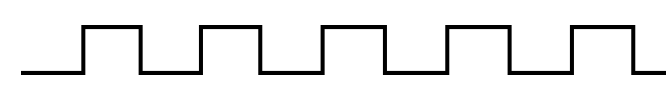
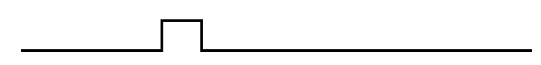
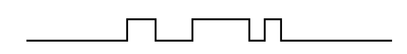
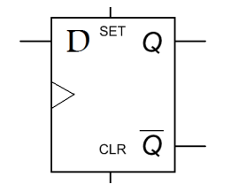
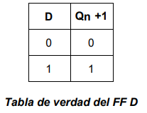
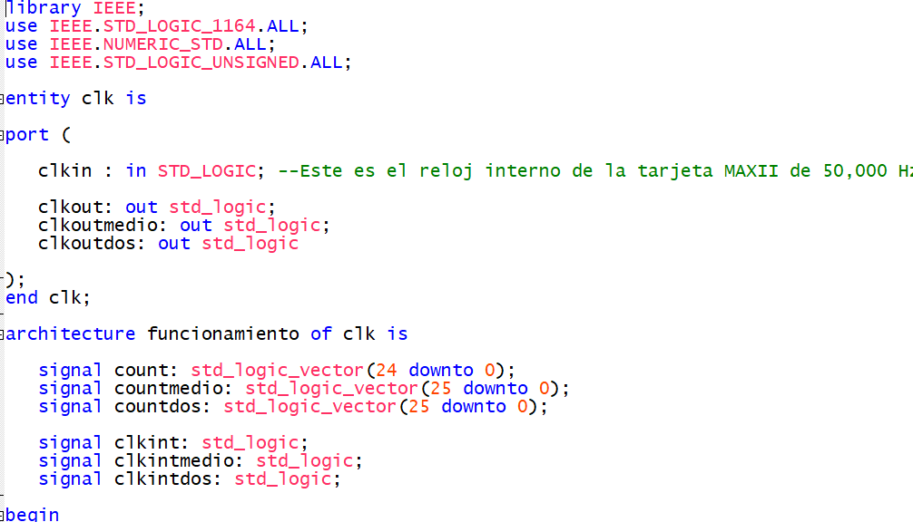
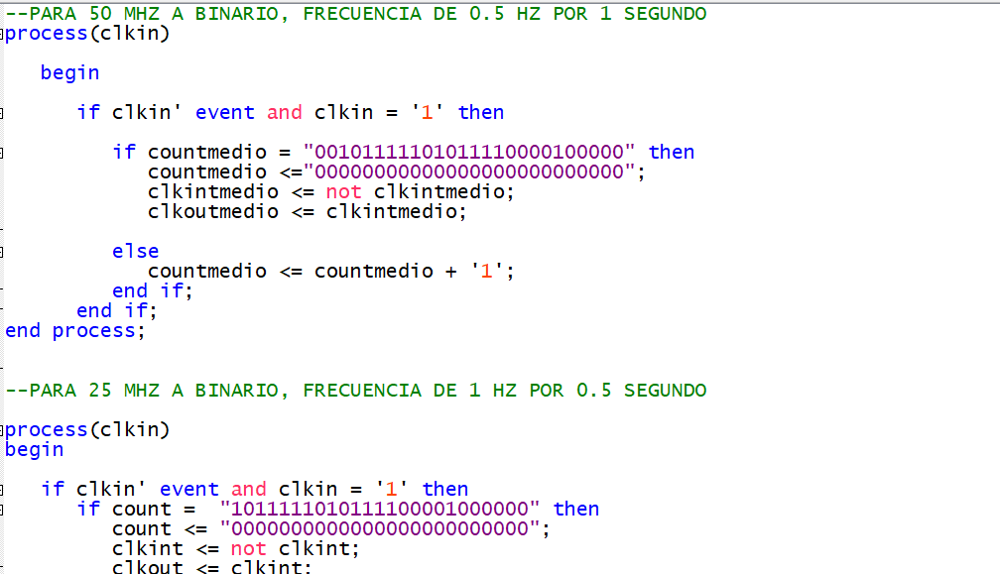
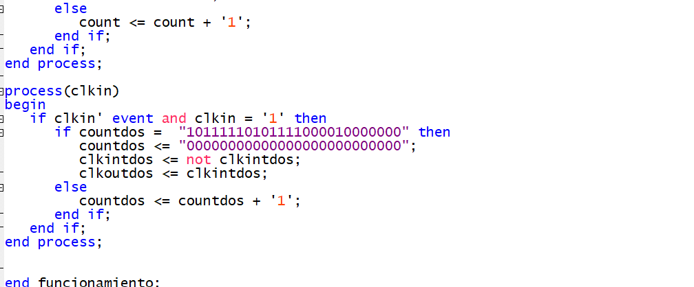
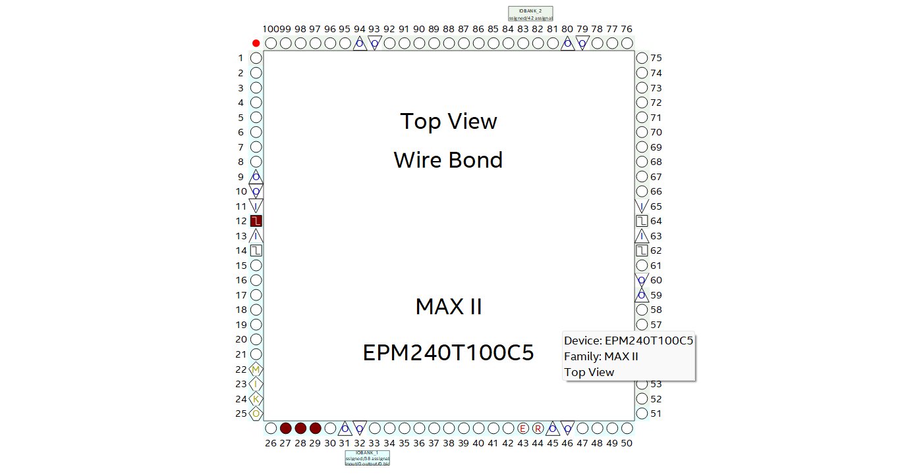

25/05/2024
PIÑÓN LÓPEZ AGUSTÍN
2NM25
TEORÍA
Objetivos:
Construir un multivibrador astable, a partir de la señal de reloj interno de la tarjeta Max II.
Introducción:
Los multivibradores son circuitos electrónicos que generan señales de salida que alternan entre dos estados estables, típicamente conocidos como "alto" y "bajo" o "1" y "0". Son ampliamente utilizados en electrónica para generar pulsos, temporizadores y osciladores. Estos circuitos son fundamentales en aplicaciones como la generación de señales de reloj en sistemas digitales, la producción de señales de disparo en circuitos de control, y la creación de ondas de forma específica en la síntesis de sonido y la instrumentación electrónica. Los multivibradores se clasifican en dos tipos principales: astables, que generan una salida continua de pulsos de igual duración, y monostables, que generan un único pulso de salida al recibir un disparo de entrada. Su versatilidad y facilidad de implementación los convierten en componentes esenciales en el diseño de circuitos electrónicos.
Multivibradores Aestables
Los multivibradores astables son circuitos electrónicos que generan una salida de pulsos periódicos sin necesidad de una señal de entrada externa. Estos pulsos cambian automáticamente entre dos estados estables, típicamente "alto" y "bajo", creando una señal de onda cuadrada continua. Son ampliamente utilizados en aplicaciones donde se requieren pulsos de temporización, tales como generadores de señales de reloj en sistemas digitales, luces intermitentes, y circuitos de control de dispositivos electrónicos. Su diseño simple y su capacidad para generar señales de forma automática los convierten en componentes esenciales en la electrónica.
Multivibradores Monostables
Los multivibradores monoestables son circuitos electrónicos que generan un único pulso de salida cuando se activan por un disparo de entrada. Después de recibir este disparo, la salida del circuito permanece en un estado estable durante un tiempo específico, determinado por componentes como resistencias y capacitores. Estos pulsos de salida se utilizan en una variedad de aplicaciones, como la sincronización de eventos, la generación de señales de activación para circuitos de control, y la creación de temporizadores. Los multivibradores monoestables son componentes fundamentales en el diseño de sistemas electrónicos que requieren la generación de pulsos precisos y controlados.
Multivibradores Biestables
Los biestables son circuitos secuenciales en electrónica digital que tienen dos estados estables de salida, generalmente representados como "0" y "1". Estos estados se mantienen incluso después de que la señal de entrada ha desaparecido, lo que los hace adecuados para almacenar información. Los biestables son componentes básicos en la construcción de registros de desplazamiento, contadores, y memorias. Hay varios tipos de biestables, como el biestable RS, el biestable D, el biestable JK y el biestable T, cada uno con características y aplicaciones específicas. La versatilidad de los biestables los convierte en elementos fundamentales en el diseño y funcionamiento de sistemas digitales.

Los flip-flops son dispositivos de almacenamiento de un bit, también conocidos como biestables, que se utilizan en sistemas digitales para almacenar datos. Dos tipos comunes de flip-flops son el flip-flop maestro-esclavo y el flip-flop por flanco.
1. Flip-flop maestro-esclavo: Este tipo de flip-flop consiste en dos biestables conectados en cascada, donde el primero (maestro) controla la entrada de datos mientras que el segundo (esclavo) controla la salida. El biestable maestro captura la entrada de datos en un flanco del reloj y la mantiene estable hasta que el biestable esclavo captura el dato en el siguiente flanco del reloj. Esto permite que los datos se almacenen de forma segura sin cambios intermedios durante la transición del reloj. Los flip-flops maestro-esclavo son comúnmente utilizados en aplicaciones donde se necesita una alta inmunidad al ruido y una sincronización precisa de los datos, como en la implementación de registros de desplazamiento y memorias.
2. Flip-flop por flanco: Estos flip-flops responden a los cambios en el flanco de la señal de reloj en lugar de su nivel absoluto. Los tipos comunes incluyen el flip-flop sensible al flanco de subida (positive-edge-triggered) y el flip-flop sensible al flanco de bajada (negative-edge-triggered). En un flip-flop sensible al flanco de subida, el dato se captura y se almacena en el flanco ascendente del reloj, mientras que en un flip-flop sensible al flanco de bajada, esto ocurre en el flanco descendente. Los flip-flops por flanco son útiles en aplicaciones donde se necesitan operaciones sincronizadas en dispositivos de almacenamiento, como en contadores y registros de desplazamiento. Su capacidad para responder a los flancos de reloj permite un funcionamiento más eficiente y preciso en sistemas digitales.
Tipos de Flips-Flops
Hay cuatro tipos de flip-flops, que son componentes esenciales en el diseño y la implementación de circuitos secuenciales en sistemas digitales.
1. Flip-flop tipo SR (Set-Reset):
- El flip-flop tipo SR tiene dos entradas, una para "Set" (S) y otra para "Reset" (R).
- Cuando la entrada S se activa, la salida del flip-flop se pone en estado alto (1).
- Cuando la entrada R se activa, la salida del flip-flop se pone en estado bajo (0).
- Si ambas entradas están activas al mismo tiempo, puede ocurrir un estado indeterminado o prohibido, lo que puede provocar un comportamiento impredecible.
- Para evitar este problema, se utilizan versiones modificadas del flip-flop SR, como el flip-flop tipo JK.
2. Flip-flop tipo JK:
- El flip-flop tipo JK es una versión mejorada del flip-flop SR y tiene tres entradas: J (Jackknife) y K (Kreuz, en alemán), además de la entrada de reloj (CLK).
- Cuando la entrada J se activa, la salida del flip-flop se pone en estado alto (1).
- Cuando la entrada K se activa, la salida del flip-flop se pone en estado bajo (0).
- Cuando ambas entradas J y K están activas al mismo tiempo, el estado del flip-flop se invierte (si está en 0, pasa a 1, y viceversa) en cada flanco de reloj.
- Esto evita el estado indeterminado que puede ocurrir en el flip-flop SR cuando ambas entradas están activas.
- El flip-flop tipo JK es ampliamente utilizado en la construcción de contadores y en aplicaciones donde se requiere la capacidad de cambiar de estado en función de condiciones específicas.
3. Flip-flop tipo T:
- El flip-flop tipo T, también conocido como flip-flop de basculamiento de datos, tiene una entrada T (Toggle) y una entrada de reloj (CLK).
- Cuando la entrada T se activa, la salida del flip-flop cambia a su estado complementario (si está en 1, pasa a 0, y viceversa) en cada flanco de reloj.
- Si la entrada T está en estado bajo (0), la salida permanece en su estado actual, sin cambios.
- El flip-flop tipo T es útil en aplicaciones donde se requiere la capacidad de invertir el estado de la salida en intervalos regulares determinados por el reloj, como en la generación de pulsos y en la implementación de divisores de frecuencia.
4.El flip-flop tipo D, también conocido como flip-flop de datos, es un tipo de biestable que tiene una entrada de datos (D) y una entrada de reloj (CLK). Este tipo de flip-flop se utiliza comúnmente en aplicaciones donde se necesita almacenar datos y actualizar la salida solo en los flancos del reloj.
El funcionamiento del flip-flop tipo D es el siguiente:
1. Entrada de datos (D): La entrada de datos determina el valor que se va a almacenar en el flip-flop. Cuando la entrada D cambia, el flip-flop no cambia de estado inmediatamente; en su lugar, espera la llegada del flanco de reloj para actualizar su estado interno.
2. Entrada de reloj (CLK): La entrada de reloj controla cuándo se actualiza el estado del flip-flop. El flip-flop tipo D actualiza su salida solo en los flancos del reloj. Dependiendo de si el flip-flop es de flanco de subida o de bajada, la salida se actualizará en el flanco ascendente o descendente del reloj, respectivamente.
3. Funcionamiento: Cuando llega un flanco de reloj, el valor de la entrada D se captura y se almacena en el flip-flop. La salida del flip-flop se actualiza para reflejar el valor de la entrada D en ese momento. Si la entrada de datos cambia después de que se ha capturado pero antes de que llegue el próximo flanco de reloj, el flip-flop no cambia su estado hasta que se produzca el próximo flanco de reloj.
El flip-flop tipo D es ampliamente utilizado en aplicaciones donde se necesita un almacenamiento de datos síncrono y controlado por reloj, como en registros de desplazamiento, almacenamiento de datos en microprocesadores, y en la implementación de circuitos de memoria y registros de almacenamiento temporal. Su simplicidad y su capacidad para sincronizar operaciones con el reloj lo hacen muy versátil y útil en el diseño de sistemas digitales.


Diseño de un multivibradoe aestable con tarjeta MAX II
Recordemos que la señal producida por el multivibrador astable es del tipo cuadrado y es periódica, es decir,
podemos conocer además de su amplitud, su periodo y frecuencia.
Amplitud: Valor máximo de una señal a partir de su nivel más bajo.
Ciclo: Sucesión de puntos que no se repiten en un tiempo dado.
Periodo: El tiempo que tarda un ciclo para repetirse.
Frecuencia: El número de ciclos en un segundo
Procedimiento de creación de la señal de reloj:

PRÁCTICA
CÓDIGO
  
PIN PLANNER

CIRCUITO